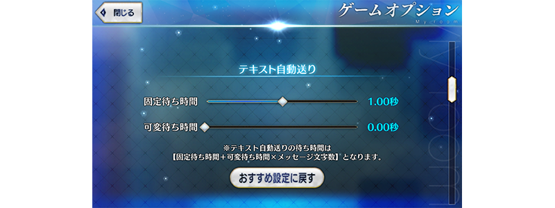
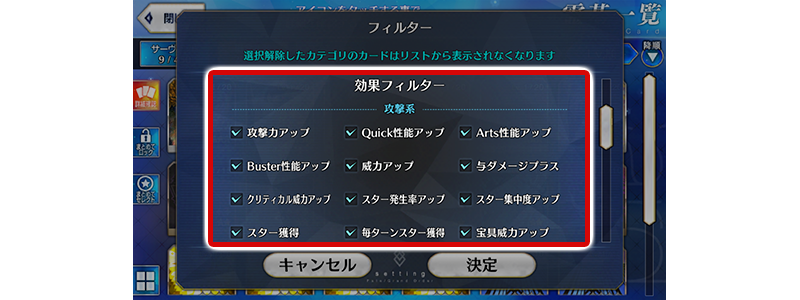

- 3/13
- 【來自迦勒底廣報局】關於3月的遊戲更新
非常感謝各位使用「Fate/Grand Order」。
來自迦勒底廣報局，告知關於預定2019年3月的下次遊戲更新。
以下介紹更新後反映的更新內容中，具有代表性的更新內容。
①在文字自動推送的功能中，擴張成可「調整等待時間來配合訊息文字數」
在文字冒險部份的文字推送設定成「AUTO」的情況，切換至下個訊息前的等待時間，變得可根據顯示的文字數做調整。
・固定等待時間:
可調整下個文字顯示前的「未依靠文字數的等待時間」。
・可變等待時間:
可調整下個文字顯示前的「配合文字數的等待時間」。
文字自動推送的等待時間＝固定等待時間＋可變等待時間×訊息文字數

※開發中畫面。
②在概念禮裝的篩選器追加「效果篩選器」功能
在概念禮裝的篩選器新追加「效果篩選器」。根據於此，變得容易找持有「攻擊力提升」「NP獲得」等特定效果的概念禮裝。

※開發中畫面。
③在隊伍編成畫面變更配置時，追加跟Servant同様地也可靠拖曳變更概念禮裝配置的功能
在「MENU」＞「編成」的隊伍編成畫面、以及關卡開始前等的隊伍確認畫面中，點擊「配置變更」鍵時，變得跟Servant同様地也可靠拖曳變更概念禮裝配置。
※開發中畫面。
以上為預定2019年3月實施的下次遊戲更新主要內容。
另外今後，也預定在期間限定活動和期間限定宣傳活動中，會有將通過主線關卡設為開放條件的情況。
無論如何，如果推進主線關卡的攻略會有所幫助。
今後也請多多指教「Fate/Grand Order」。